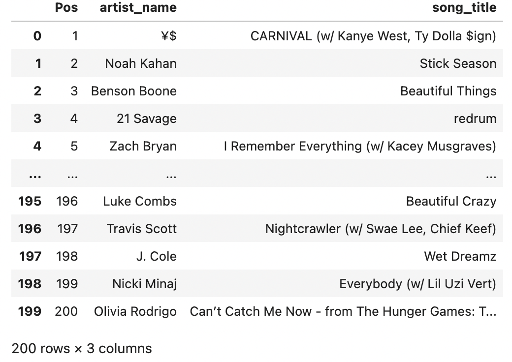
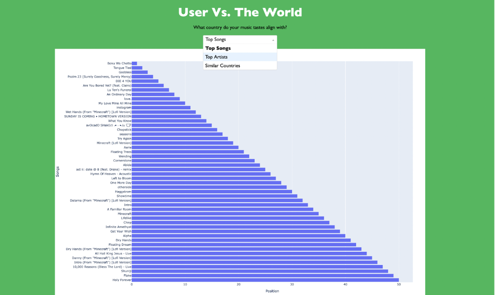
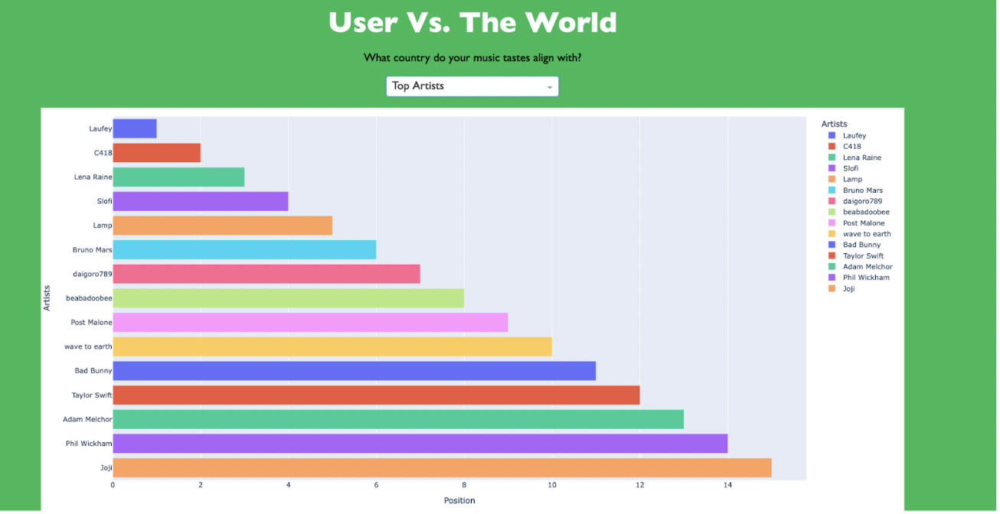
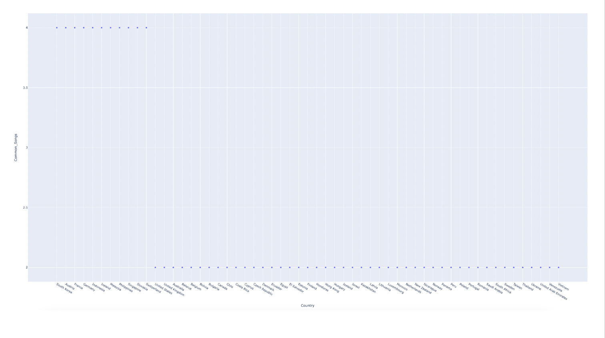

PIC16B Project Group 3
Web Scraping with Beautiful Soup
First, we imported the necessary libraries for web scraping. We used BeatifulSoup to scrape our data.
import pandas as pd
from bs4 import BeautifulSoup
import requestsThe code scrapes URLs of weekly Spotify charts from the specified webpage and stores them in the link_list variable.
soup = BeautifulSoup(requests.get('https://kworb.net/spotify/').text)
link_list = [l['href'] for l in soup.find('table').find_all('a', href=True)
if ('weekly' in l['href']) and ('totals' not in l['href'])]
link_list[1:]['country/us_weekly.html',
'country/gb_weekly.html',
'country/ad_weekly.html',
'country/ar_weekly.html',
'country/au_weekly.html',
'country/at_weekly.html',
'country/by_weekly.html',
'country/be_weekly.html',
'country/bo_weekly.html',
'country/br_weekly.html',
'country/bg_weekly.html',
'country/ca_weekly.html',
'country/cl_weekly.html',
'country/co_weekly.html',
'country/cr_weekly.html',
'country/cy_weekly.html',
'country/cz_weekly.html',
'country/dk_weekly.html',
'country/do_weekly.html',
'country/ec_weekly.html',
'country/eg_weekly.html',
'country/sv_weekly.html',
'country/ee_weekly.html',
'country/fi_weekly.html',
'country/fr_weekly.html',
'country/de_weekly.html',
'country/gr_weekly.html',
'country/gt_weekly.html',
'country/hn_weekly.html',
'country/hk_weekly.html',
'country/hu_weekly.html',
'country/is_weekly.html',
'country/in_weekly.html',
'country/id_weekly.html',
'country/ie_weekly.html',
'country/il_weekly.html',
'country/it_weekly.html',
'country/jp_weekly.html',
'country/kz_weekly.html',
'country/lv_weekly.html',
'country/lt_weekly.html',
'country/lu_weekly.html',
'country/my_weekly.html',
'country/mt_weekly.html',
'country/mx_weekly.html',
'country/ma_weekly.html',
'country/nl_weekly.html',
'country/nz_weekly.html',
'country/ni_weekly.html',
'country/ng_weekly.html',
'country/no_weekly.html',
'country/pk_weekly.html',
'country/pa_weekly.html',
'country/py_weekly.html',
'country/pe_weekly.html',
'country/ph_weekly.html',
'country/pl_weekly.html',
'country/pt_weekly.html',
'country/ro_weekly.html',
'country/ru_weekly.html',
'country/sa_weekly.html',
'country/sg_weekly.html',
'country/sk_weekly.html',
'country/za_weekly.html',
'country/kr_weekly.html',
'country/es_weekly.html',
'country/se_weekly.html',
'country/ch_weekly.html',
'country/tw_weekly.html',
'country/th_weekly.html',
'country/tr_weekly.html',
'country/ua_weekly.html',
'country/ae_weekly.html',
'country/uy_weekly.html',
'country/ve_weekly.html',
'country/vn_weekly.html']Cleaning the data
We cleaned the data by iterating over a link_list obtained from scraping Spotify weekly charts from the website ‘https://kworb.net/spotify/’. We extracted and processed Spotify weekly chart data from the specified URLs, splitting artist and song title information and dropping unnecessary columns and displayed the resulting data frame.
for link in link_list[1:3]:
df = pd.read_html(f'https://kworb.net/spotify/{link}')[0]
if 'Artist and Title' in df.columns:
df[['artist_name', 'song_title']] = df['Artist and Title'].str.split('-', n=1, expand = True)
df.drop(columns=['Artist and Title'], inplace=True)
df.drop(columns=['P+', 'Wks', 'Pk', '(x?)', 'Streams', 'Streams+', 'Total'], inplace = True)
display(df) 
Next, we extracted country names from specific tags in the HTML content parsed using BeautifulSoup. It filters out certain country names specified in the filters list and then prints the remaining country names.
td_tags = soup.find_all('td', class_="mp text")
filters = ['Global']
country_names_list = []
for i in range(0, len(td_tags), 2):
country_name = td_tags[i].get_text()
if country_name not in filters:
country_names_list.append(country_name)
print(country_names_list)['United States', 'United Kingdom', 'Andorra', 'Argentina', 'Australia', 'Austria', 'Belarus', 'Belgium', 'Bolivia', 'Brazil', 'Bulgaria', 'Canada', 'Chile', 'Colombia', 'Costa Rica', 'Cyprus', 'Czech Republic', 'Denmark', 'Dominican Republic', 'Ecuador', 'Egypt', 'El Salvador', 'Estonia', 'Finland', 'France', 'Germany', 'Greece', 'Guatemala', 'Honduras', 'Hong Kong', 'Hungary', 'Iceland', 'India', 'Indonesia', 'Ireland', 'Israel', 'Italy', 'Japan', 'Kazakhstan', 'Latvia', 'Lithuania', 'Luxembourg', 'Malaysia', 'Malta', 'Mexico', 'Morocco', 'Netherlands', 'New Zealand', 'Nicaragua', 'Nigeria', 'Norway', 'Pakistan', 'Panama', 'Paraguay', 'Peru', 'Philippines', 'Poland', 'Portugal', 'Romania', 'Russia', 'Saudi Arabia', 'Singapore', 'Slovakia', 'South Africa', 'South Korea', 'Spain', 'Sweden', 'Switzerland', 'Taiwan', 'Thailand', 'Turkey', 'Ukraine', 'United Arab Emirates', 'Uruguay', 'Venezuela', 'Vietnam']Finally, we created a combined dataframe with the columns Pos, artist_name, song_title, and country. We saved the dataframe to a csv file.
combined_df = pd.DataFrame()
for link, country_name in zip(link_list[1:], country_names_list):
df = pd.read_html(f'https://kworb.net/spotify/{link}')[0]
if 'Artist and Title' in df.columns:
df[['artist_name', 'song_title']] = df['Artist and Title'].str.split('-', n=1, expand = True)
df.drop(columns=['Artist and Title', 'P+', 'Wks', 'Pk', '(x?)', 'Streams', 'Streams+', 'Total'], inplace = True)
df['country'] = country_name
combined_df = combined_df.append(df, ignore_index = True)
combined_df.to_csv('country_charts.csv', index=False)SQL Database: countries_sql.py
First, we imported the necessary libraries to create our database.
import sqlite3
import pandas as pd
import numpy as npNext, we read the csv file we created when webscraping and convert the dataframe to SQL.
df = pd.read_csv('/Users/andrewhan/Desktop/2023-2024/Winter_24/PIC_Class/Project/country_charts.csv')
df.head()
conn = sqlite3.connect('country_data.db')
df.to_sql('country_data', conn, if_exists='replace', index=False)The code below defines a class DatabaseHandler with static methods for creating a SQLite database, creating a table within that database, and inserting data into the table.
class DatabaseHandler:
@staticmethod
def create_database():
conn = sqlite3.connect('country_data.db') #creates and connects to country_data.db database
conn.close()
@staticmethod
def create_table():
conn = sqlite3.connect('country_data.db')
c = conn.cursor()
c.execute('''
CREATE TABLE IF NOT EXISTS countries (
country TEXT,
song_name TEXT,
artist_name TEXT,
rank INTEGER
)
''')
conn.commit()
conn.close()
# MULTI INDEX SQL
@staticmethod
def insert_data():
DatabaseHandler.create_database()
DatabaseHandler.create_table()
conn = sqlite3.connect('country_data.db')
c = conn.cursor()
c.execute('''
INSERT INTO countries (country, song_name, artist_name, rank)
SELECT country, song_name, artist_name, rank
FROM countries
WHERE (country, rank) IN (
SELECT country, MAX(rank)
FROM countries
GROUP BY country
)
''')
conn.commit()
#fetch data from the countries table
c.execute('''
SELECT c.country, c.song_name, c.artist_name, c.rank
FROM countries c
JOIN countries yt ON c.country = yt.country AND c.song_name = yt.song_name AND c.artist_name = yt.artist_name
ORDER BY c.country
''')
conn.commit()
conn.close()
DatabaseHandler.insert_data()Visualizing the data: visualization.py
First, we import the necessary libraries for visualizing the data.
import pandas as pd
import numpy as np
import matplotlib.pyplot as plt
import seaborn as sns
import sqlite3
import csv
# data visualization
import plotly.express as px
# Import your functions or ensure they are defined in this script
# from your_module import collect_user_listening_data, recommend_countries
import spotipy
from spotipy.oauth2 import SpotifyOAuth
import dash
from dash import dcc, html
from dash.dependencies import Input, OutputWe created three functions to visualize the data. plot_top_songs takes in the user’s top songs and generates a horizontal bar plot using Plotly Express. Similar to the previous function, plot_top_artists takes a list of user’s top artists as input and generates a horizontal bar plot using Plotly Express. plot_recommended_countries takes a dictionary of country scores as input and generates a scatter plot using Plotly Express.
# ===== Visualization 1: User's Top Tracks ===== (works)
def plot_top_songs(user_top_songs):
"""
This plot shows the top 50 songs for the user
"""
# putting the list of songs into another variable
songs = user_top_songs
# creating a dataframe
top_songs_data = pd.DataFrame()
# processing and concatenating to clean up the dataframe
top_songs_data['Songs'] = songs
# Adding position values to prepare for the grapg
top_songs_data['Position'] = top_songs_data.index + 1
# creating the plot
top_songs_data = top_songs_data[::-1]
fig = px.bar(top_songs_data, x = 'Position', y = 'Songs', orientation='h', width=1500, height=1000)
fig.update_layout(
margin=dict(l=50, r=50, t=50, b=50), # Adjust margins as needed
)
return fig
# ===== Visualization 2: User's Top Artists ====== (works)
def plot_top_artists(user_top_artists):
"""
This plot shows the top 15 artists for the user
"""
# putting the list of songs into another variable
artists = user_top_artists
# creating a dataframe
top_artists_data = pd.DataFrame()
# processing and concatenating to clean up the dataframe
top_artists_data['Artists'] = artists
# Adding position values to prepare for the grapg
top_artists_data['Position'] = top_artists_data.index + 1
# creating the plot
# top_artists_data = top_artists_data[::-1]
fig = px.bar(top_artists_data, x = 'Position', y = 'Artists', orientation='h', width=1500, height=700, color='Artists')
fig.update_layout(
margin=dict(l=15, r=15, t=15, b=15),
)
return fig
# ===== Visualization 3: Recommended Countries Plot ====== (works)
def plot_recommended_countries(country_scores):
# first processing into a dataframe for the plot
# creating new columns, preparing for df
column_names = ['Country', 'Common_Songs']
# creating a new dataframe
recommend_data = pd.DataFrame(list(country_scores.items()), columns=column_names)
#feeding into new dataframe
# assuming that country_scores is a list of country names
# countries = country_scores
fig = px.scatter(recommend_data, x="Country", y="Common_Songs")
fig.show()
return fig Web development: plotlydash.py
We created a Plotly Dash web application that allows users to visualize different aspects of their music preferences. The app consists of a dropdown menu to select the type of data to visualize (top songs, top artists, or recommended countries) and a graph area where the selected data will be displayed.
import plotly.express as px
# Import your functions or ensure they are defined in this script
# from your_module import collect_user_listening_data, recommend_countries
import spotipy
from spotipy.oauth2 import SpotifyOAuth
import dash
from dash import dcc, html
import dash_ag_grid as dag
from dash.dependencies import Input, Output
# from visualization
from visualization import plot_top_songs, plot_top_artists, plot_recommended_countries
# ==== PLOTLY APP ====
# Define the Plotly Dash app
app = dash.Dash(__name__)
# Define the layout of the app
app.layout = html.Div(
style={'display': 'flex', 'justifyContent': 'center', 'alignItems': 'center', 'flexDirection': 'column', 'backgroundColor': '#1db954'},
children=[
html.H1(children='User Vs. The World', style={'textAlign':'center', 'fontSize':50, 'fontFamily': 'Gill Sans', 'color': 'White', 'marginBottom': '10px', 'fontWeight': 'medium'}),
html.P("What country do your music tastes align with?", style={'fontFamily': 'Gill Sans', 'fontSize': 20, 'color':'191414', 'marginTop':'10px'}),
dcc.Dropdown(
id='data-type-dropdown',
options=[
{'label': 'Top Songs', 'value': 'top_songs'},
{'label': 'Top Artists', 'value': 'top_artists'},
{'label': 'Similar Countries', 'value': 'recommended_countries'},
],
value='top_songs', # Default value
clearable=False,
style={'width': '300px','margin': 'auto', 'fontSize': '20px', 'fontFamily': 'Gill Sans'},
),
dcc.Graph(id='data-plot', style={'margin': 'center', 'marginTop': '20px'})
]
)
# Define a callback to update the plot based on the dropdown selection
@app.callback(
Output('data-plot', 'figure'),
[Input('data-type-dropdown', 'value')]
)
def update_data_plot(data_type):
if data_type == 'top_songs':
# Call function to collect user's top songs
user_top_songs = collect_user_top_tracks() # Assuming you have a function like this
# Call function to plot top songs
return plot_top_songs(user_top_songs)
elif data_type == 'top_artists':
# Call function to collect user's top artists
user_top_artists = collect_user_top_artists() # Assuming you have a function like this
# Call function to plot top artists
return plot_top_artists(user_top_artists)
elif data_type == 'recommended_countries':
user_top_songs = collect_user_top_tracks()
recommended = recommend_countries(user_top_songs)
return plot_recommended_countries(recommended)
# Run the app
if __name__ == '__main__':
app.run_server(debug=True)A demonstration of the app can be seen below. The homepage has a toggle that displays the users top songs, top artists, and recommended countries.
  